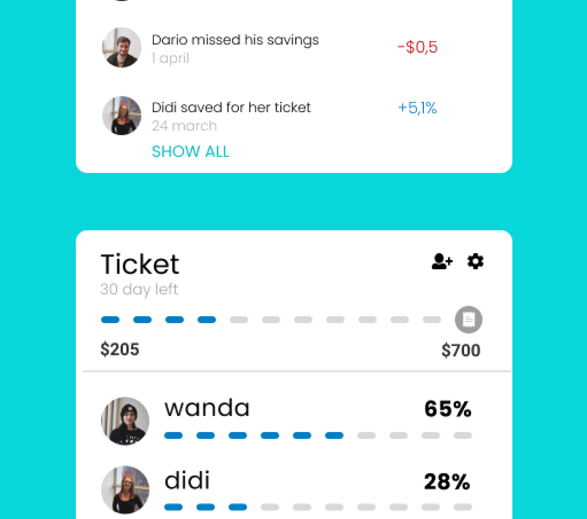
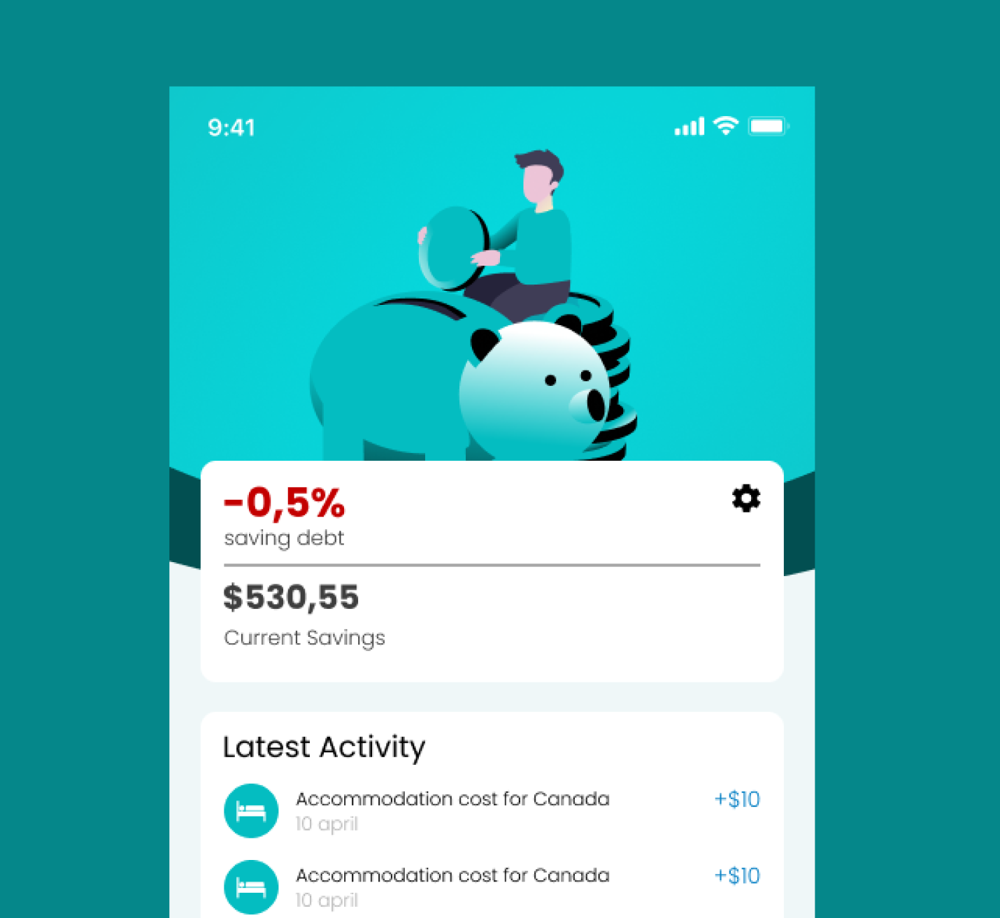

UX Challenge
There are many financial solutions. However, most of them are based upon rational choice theory. Research has shown (Daniel Kahneman) that the choices we make are not rational.
How might I be able to use behavioural economics and psychology to influence saving behaviour?

For Who?
My users are millennials in the Netherlands with a hedonistic live in the moment mentality. My user has a short-term orientation, which conflicts with their ability to save money. They don’t lack the income to save, just the control.
Research Method
To research my user I’ve set up a research plan with different iterations. I’ve done this by doing some roleplay with the user. To test the balance between saving and spending, I gave them monopoly money. To test emotion tied to those purchases I’ve asked them to map their purchases on a graph I designed.

Insights and Solutions
I’ve found that pending money on a shared experience with another person is considered meaningful, because it contributes to social relationships with another person.
This is why I’ve decided to save for holidays. A holiday is a shared experience. This why my saving app could be group based too!

I’ve also found my user saves money in sprints. They set a specific goal to save a specific amount each month.
This is why I introduced goal based saving. Smaller milestones, being part of the bigger picture. This also helps with their short-term orientation.

Loss Aversion (Daniel Kahneman) states that people prefer avoiding losses to acquiring equivalent gains: it is better to not lose $5 than to find $5.
This is why I’ve included saving debt. If you miss your savings, you will be in debt to your own goal and in group based saving, others will see that you are in debt.
